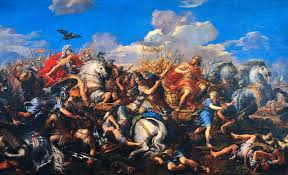
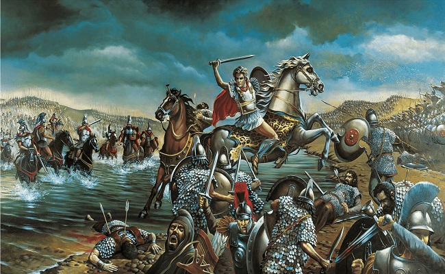
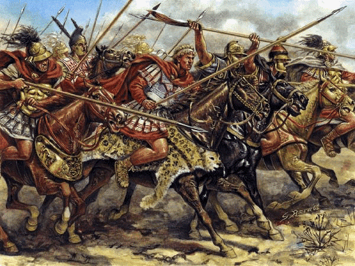
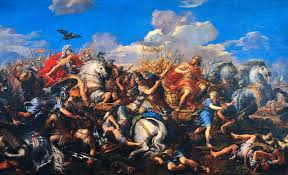
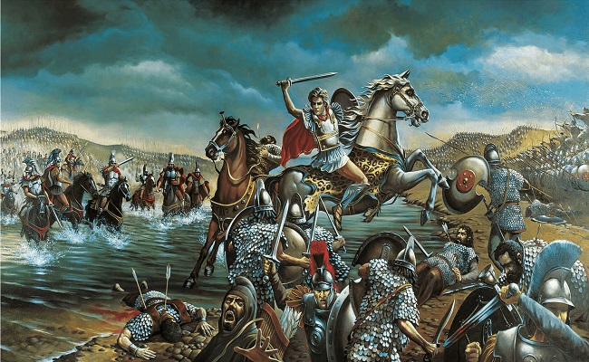
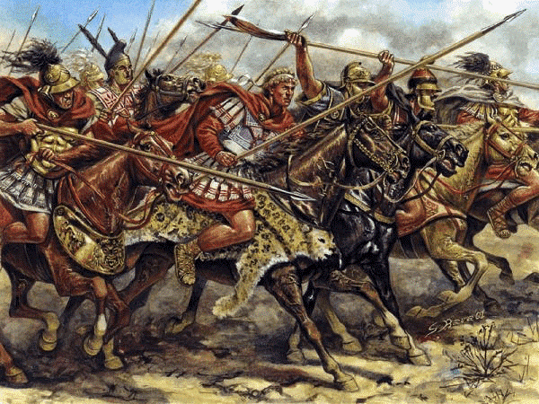

Legado de Alejandro Magno
| Aspecto | Descripción |
|---|---|
| Expansión Cultural | Fomentó la fusión entre culturas griega, persa, egipcia e india. |
| Ciudades Fundadas | Fundó más de 20 ciudades, muchas llamadas Alejandría. |
| Educación y Ciencia | Impulsó el pensamiento helenístico y la difusión del conocimiento. |
| Modelo de Liderazgo | Inspiró a líderes posteriores como César y Napoleón. |
-
 





📜 Legado de Alejandro Magno
Alejandro Magno no solo fue un conquistador brillante, sino también una figura que dejó una profunda huella en la historia mundial. Su legado transformó el mundo antiguo en múltiples aspectos, especialmente en lo cultural, político y militar.< Tras conquistar el vasto Imperio Persa, Alejandro promovió activamente la fusión entre las culturas orientales y occidentales, dando origen a una nueva era conocida como el helenismo. Durante esta época, la cultura griega se mezcló con la persa, la egipcia y la india, lo que resultó en avances significativos en el arte, la arquitectura, la ciencia, la filosofía y la literatura.
Uno de sus logros más tangibles fue la fundación de ciudades, muchas de ellas llamadas "Alejandría", que se convirtieron en centros clave del conocimiento y el comercio. La más famosa de ellas, Alejandría en Egipto, albergó la legendaria Biblioteca de Alejandría, una de las más grandes del mundo antiguo.
En lo militar, Alejandro es considerado un genio táctico. Su forma de liderar y planificar batallas fue estudiada por estrategas a lo largo de los siglos. Figuras como Julio César, Napoleón Bonaparte y Aníbal se inspiraron en él. Además, sus campañas contribuyeron al intercambio de ideas, tecnologías y costumbres entre Oriente y Occidente.
A pesar de su corta vida, la influencia de Alejandro Magno perduró durante siglos. Fue clave en el surgimiento del mundo grecorromano y sentó las bases para el desarrollo de la civilización occidental. Su figura continúa siendo símbolo de liderazgo, ambición y grandeza.